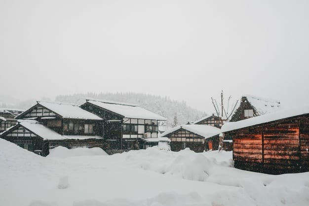

Tips for winterizing your home ahead of cold weather
Getting prepared before the first snowfall of the season can save homeowners time and headaches.
By Sophia Bliss
BOISE, Idaho — After the record heat we saw this summer, many of us are probably ready for cooler temps, but your house and yard might not be. Temperatures in the Treasure Valley will be above freezing this week but could start creeping lower very soon. Whether you are new to Idaho winters or a cold-weather vet, there are a few things you can do to get ready for freezing temperatures that can wreak havoc on pipes, sprinklers, and foundations. One way to start is by getting your sprinklers blown out. While we haven’t seen a hard freeze of 28 degrees or below yet, it will get that cold eventually. When temperatures dip and stay that cold for several hours, sprinkler and house pipes can freeze which could make them burst. Water is one of the only substances that expands when it freezes, because of the way water molecules are charged. When water freezes, it crystallizes into a hexagonal shape. So the same amount of liquid water that fits in the pipe, with no problems, may create thousands of dollars in damage for your yard, or in your home. Residents will also want to pay attention to hoses: While a hose bib is freeze-resistant, if there’s a hose hooked to it, it can freeze and damage the pipes back in the wall. Next, check the heater. Heaters can give off too much carbon dioxide if they’re not operating properly. And, with all the wildfire smoke we’ve had around this year, air filters will need to be checked and possibly replaced. Doing so sooner rather than later is a good bet: Earlier this year, air conditioning parts were on backorder due to COVID-19 shipping delays. It’s also a good idea to check your gutters and clean out all the fall leaves and debris. Gutter drains should be pointed away from the foundation, so that rain or melted snow doesn’t pose a threat of freezing and causing damage. And just to make sure you stay warm and cozy all winter without wasting any energy, check your doors and windows for gaps. You can find leaks by running your hand along the seams of your windows and doors, applying weather stripping in areas where there is cold air or a draft. Keeping openings properly sealed can reduce your heating bills by up to 10%. If this is your first winter in Idaho, we average anywhere from 10-20" of snow in the Treasure Valley. Having a snow shovel on hand and an ice scraper in your car before the first snowfall can also really help reduce stress later.